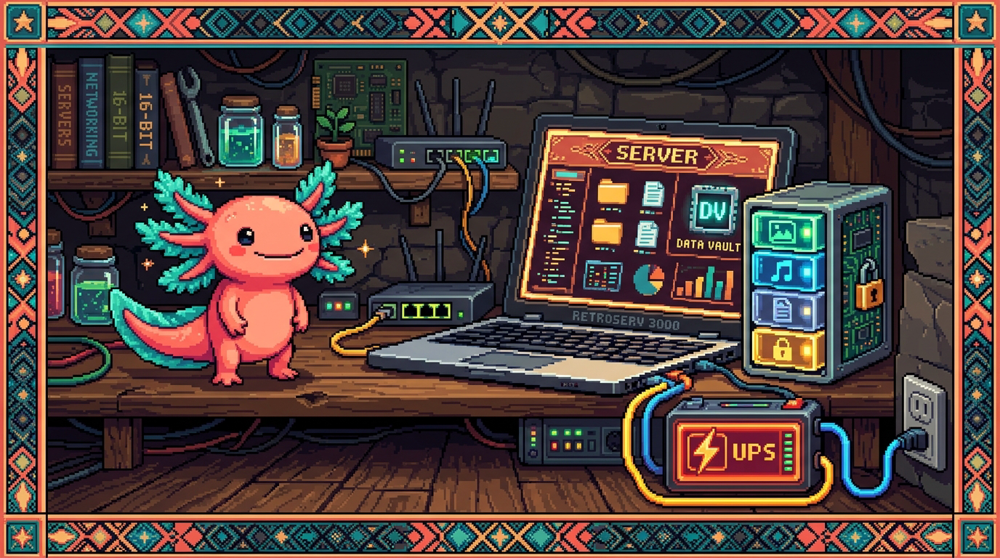

Capítulo 01 — ¿Qué es un servidor y un NAS?

Cambiamos de tema: pasamos de escribir apps a las máquinas que las hacen funcionar. Y aquí tienes una ventaja: ya posees un servidor de verdad (tu
polypaw-nas), así que nada de esto va a quedarse en teoría abstracta. Vas a entender exactamente qué tienes en casa y por qué te sirve tanto.
1. Qué es un servidor (de verdad, sin misterio)
La palabra ya apareció en el Módulo 00. Vamos a recordarla y a meternos un poco más a fondo.
🟦 ¿Qué significa? — Servidor
Un servidor es una computadora (o un programa) que está encendida y a la espera, lista para dar un servicio a otras computadoras que se lo pidan: entregar páginas web, archivos, datos, correo… La palabra viene de servir, sin más. No es un tipo especial de máquina: es un papel. Cualquier computadora puede ser servidor si tiene un programa que "sirve" algo y está disponible para que otros lo usen.
💡 Tip — Servidor ≠ caja misteriosa en una sala fría
Casi siempre imaginamos los servidores como armarios llenos de lucecitas en un centro de datos. Algunos son así, sí, pero un servidor también puede ser un laptop viejo en tu casa. Lo que lo separa de tu computadora normal no es el hardware, sino el papel que cumple: tu laptop de diario consume servicios (cliente), mientras que un servidor los ofrece. Tu Acer Nitro hizo justo ese salto: de cliente (jugar) a servidor (servir archivos y agentes).
🟦 ¿Qué significa? — Cliente y servidor (repaso aplicado)
Imagina que desde tu teléfono abres un archivo guardado en el NAS: tu teléfono es el cliente (el que pide) y el NAS es el servidor (el que responde con el archivo). Es el mismo modelo del Módulo 00, solo que ahora ocurre dentro de tu casa y no por internet.
2. Qué es un NAS
🟦 ¿Qué significa? — NAS (Network Attached Storage)
Un NAS (Network Attached Storage, "almacenamiento conectado a la red") es un servidor especializado en guardar archivos y compartirlos con todos los dispositivos de tu red. En lugar de tener tus fotos en una memoria USB que vas pasando de un aparato a otro, viven en el NAS, y tu teléfono, tu laptop y tu tele las ven a la vez, a través de la red de tu casa. Piénsalo como tu propia "nube" privada en casa: parecido a Google Drive o Dropbox, pero el disco es tuyo, está bajo tu techo, y no pagas mensualidad ni dependes de ninguna empresa.
💡 Tip — Por qué un NAS es tan útil
- Centraliza: todos tus archivos en un solo sitio, accesibles desde cualquier dispositivo.
- Respalda: copias de seguridad automáticas de tus equipos.
- Comparte: varias personas (la familia) trabajan sobre los mismos archivos.
- Privacidad y costo: tus datos se quedan en tu casa, sin cuotas mensuales de almacenamiento.
- Más que archivos: puede correr otros servicios (como hace el tuyo con AdGuard y OpenClaw).
3. Tu NAS concreto: un Acer Nitro reconvertido
Veamos, pieza por pieza, por qué tu equipo es un buen servidor (¿te acuerdas del hardware del Módulo 00?):
🔎 En tu equipo —
polypaw-nas
- CPU Intel i5-9300H (4 núcleos / 8 hilos): "cerebro" de sobra para servir archivos y correr varios servicios a la vez. (Núcleos/hilos = cuántas tareas puede atender en paralelo, Módulo 00.)
- 8 GB de RAM: su memoria de trabajo. Aquí está el límite principal de cara al futuro: cada servicio que añadas consume RAM, y 8 GB se llenan si metes demasiados. (RAM = el escritorio, Módulo 00.)
- SSD NVMe 238 GB (sistema) + HDD 954 GB (datos en
/srv/nas): el SSD, que es rápido, hace que Ubuntu arranque ágil; el HDD, grande y barato, guarda los archivos. Una división clásica y bien pensada. El disco de datos está casi vacío (~890 GB libres), así que espacio te sobra.💡 Tip — La batería como UPS (un detalle genial)
Un UPS (Uninterruptible Power Supply, "fuente de alimentación ininterrumpida") es una batería que mantiene el equipo encendido unos minutos cuando se va la luz, para evitar apagones bruscos que podrían corromper datos. Los servidores serios usan uno. Lo curioso es que tu laptop ya trae su batería integrada, así que tienes UPS gratis. Si la luz parpadea, tu NAS no se apaga ni se corrompe. Es una ventaja muy real de usar un laptop como servidor.
4. ¿NAS dedicado o "hecho a mano"? El caso de tu equipo
🟦 ¿Qué significa? — NAS "appliance" vs. servidor genérico
Para tener un NAS hay básicamente dos caminos: - Aparato dedicado (Synology, QNAP) o sistemas como TrueNAS / OpenMediaVault: vienen con una interfaz lista para NAS. Es cómodo, pero también más cerrado. - Servidor genérico hecho a mano: una computadora con un Linux normal (como tu Ubuntu Server) a la que tú le vas instalando las piezas (Samba para compartir, Cockpit para administrar). Resulta más flexible y educativo —aprendes de verdad cómo funciona por dentro—, aunque toca configurarlo tú. Tu NAS es del segundo tipo: Ubuntu Server + Samba + Cockpit, armado a mano. Por eso este módulo te enseña tanto: entiendes cada pieza porque está puesta a propósito, no escondida detrás de una interfaz.
✅ Checklist — ¿ya domino esto?
- [ ] Explico qué es un servidor y que es un papel (servir), no un hardware especial.
- [ ] Sé qué es un NAS y por qué es "tu nube privada en casa".
- [ ] Entiendo las piezas de tu NAS (CPU, RAM como límite, SSD sistema + HDD datos).
- [ ] Sé qué es un UPS y por qué la batería del laptop cumple ese papel.
- [ ] Distingo un NAS dedicado de un servidor genérico (el tuyo) y por qué el tuyo enseña más.
🧪 Ejercicios
Este módulo es práctico-conceptual, y varios ejercicios los harás conectándote a tu NAS (verás cómo en los próximos capítulos). Por ahora, puro razonamiento:
- Cliente o servidor. En estas escenas, di quién es cliente y quién servidor: (a) ves una película guardada en el NAS desde la tele; (b) tu NAS le pide una página a Google.
- Por qué NAS. Da tres ventajas de tener tus fotos en el NAS en lugar de en una memoria USB.
- El límite. ¿Por qué decimos que los 8 GB de RAM son el principal límite de tu NAS y no el disco (que tiene 890 GB libres)? (Repasa RAM vs. disco del Módulo 00.)
- UPS. Explica con tus palabras por qué un apagón brusco es peligroso para un servidor y cómo ayuda la batería del laptop.
- Dedicado vs. a mano. Menciona una ventaja y una desventaja de haber montado el NAS "a mano" con Ubuntu en lugar de comprar un Synology.
➡️ Siguiente: Capítulo 02 — Linux y la terminal del servidor.